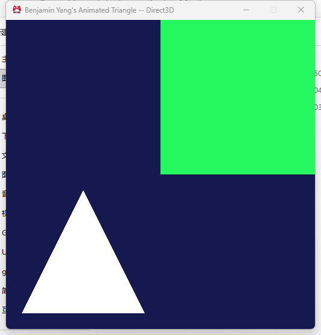
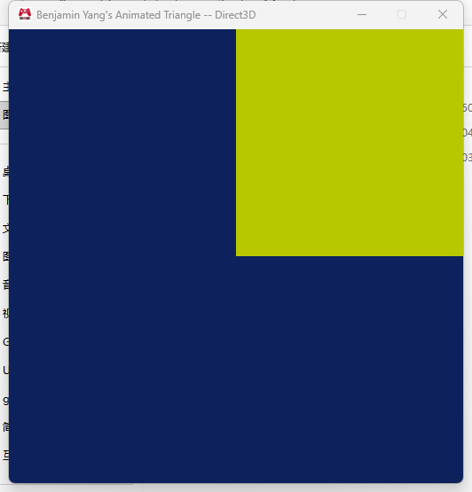
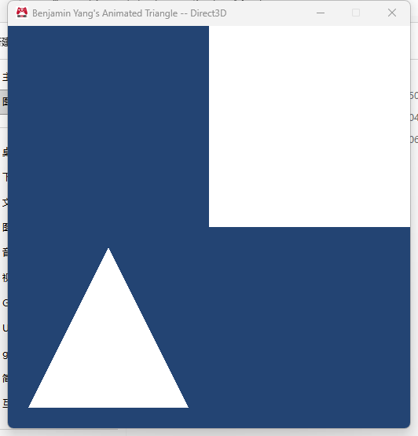
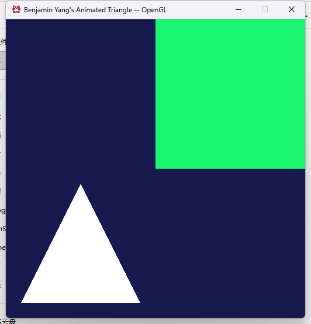

Assignment 04
The game submits what to draw: reference counted meshes and effects, a background color, and input
MyGame.exe. ESC closes the game, hold SPACE to hide the triangle, hold SHIFT to draw the rectangle white.
Screenshots




Submitting the background color
This is the code in cMyGame::SubmitDataToBeRendered():
// Background color
{
const auto t = static_cast<float>( GetElapsedSecondCount_simulation() ) + i_elapsedSecondCount_sinceLastSimulationUpdate;
const float red = 0.15f + 0.10f * std::sin( t * 0.7f );
const float green = 0.25f + 0.15f * std::sin( t * 0.5f + 2.0f );
const float blue = 0.40f + 0.15f * std::sin( t * 0.3f + 4.0f );
Graphics::SubmitBackgroundColor( red, green, blue );
}Graphics::SubmitBackgroundColor( r, g, b, a = 1 ) takes the channels as floats in [0, 1]; a fixed color would just be Graphics::SubmitBackgroundColor( 1.0f, 0.0f, 0.0f ); for red. The animation is the optional challenge: the two time values passed into SubmitDataToBeRendered() are not what the renderer sees, so I use GetElapsedSecondCount_simulation() (the total simulated time) plus the elapsed-but-not-yet-simulated time the function receives, which is exactly what iApplication passes to Graphics::SubmitElapsedTime().
Submitting a mesh with an effect
The meshes and effects are created once in cMyGame::Initialize() with the factory functions and stored as pointers in the game class:
Graphics::cMesh* m_mesh_rectangle = nullptr;
Graphics::cMesh* m_mesh_triangle = nullptr;
Graphics::cEffect* m_effect_animatedColor = nullptr;
Graphics::cEffect* m_effect_white = nullptr; Graphics::cEffect::Load( "data/Shaders/Vertex/standard.shader",
"data/Shaders/Fragment/animatedColor.shader", renderStateBits, m_effect_animatedColor );
...
Graphics::cMesh::Load( vertexData, static_cast<uint16_t>( std::size( vertexData ) ),
indexData, static_cast<unsigned int>( std::size( indexData ) ), m_mesh_rectangle );Every frame the game says which mesh goes with which effect, one call per object, in SubmitDataToBeRendered():
// Objects
{
// The rectangle normally animates its color; while SHIFT is held it is drawn plain white instead
Graphics::SubmitMeshToDraw( m_mesh_rectangle, m_isRectangleWhite ? m_effect_white : m_effect_animatedColor );
// The triangle disappears while SPACE is held
if ( !m_isTriangleHidden )
{
Graphics::SubmitMeshToDraw( m_mesh_triangle, m_effect_white );
}
}So "draw mesh A with effect B" is Graphics::SubmitMeshToDraw( A, B ), nothing else. The two booleans come from UpdateSimulationBasedOnInput(), which only records game state:
void eae6320::cMyGame::UpdateSimulationBasedOnInput()
{
m_isTriangleHidden = UserInput::IsKeyPressed( UserInput::KeyCodes::Space );
m_isRectangleWhite = UserInput::IsKeyPressed( UserInput::KeyCodes::Shift );
}In CleanUp() the game calls DecrementReferenceCount() on its four pointers and sets them to null. Graphics.cpp no longer owns any mesh or effect, and the ExampleGame project, which submits nothing, runs and shows a black window.
Why submit instead of drawing immediately
The game logic runs on the application loop thread and the renderer runs on the main thread, and they are deliberately one frame apart: while the render thread is drawing frame N, the application thread is already producing frame N+1. Graphics.cpp keeps two sDataRequiredToRenderAFrame structs and swaps the two pointers every frame, so the application only ever writes to the one the renderer is not reading. If the game called Bind() and Draw() directly from its own thread, it would be touching the GPU context at the same time as the render thread (which Direct3D 11 and OpenGL do not allow from two threads), and the application would have to wait for the GPU to finish before it could continue simulating. Caching everything for the frame (background color, the mesh/effect pairs, the times) in a struct means the render thread has a complete, consistent snapshot to work from, and the application thread never blocks on rendering. The price is that the data has to stay valid until the render thread is done with it, which is exactly why the submit function takes a reference on each mesh and effect and RenderFrame() releases them afterwards.
sizeof(cMesh)
| Direct3D (x64) | OpenGL (x86) | |
|---|---|---|
| sizeof(cMesh) | 32 bytes | 20 bytes |
#if defined( EAE6320_PLATFORM_D3D )
ID3D11Buffer* m_vertexBuffer = nullptr; // 8
ID3D11Buffer* m_indexBuffer = nullptr; // 8
cVertexFormat* m_vertexFormat = nullptr; // 8
#elif defined( EAE6320_PLATFORM_GL )
GLuint m_vertexArrayId = 0; // 4
GLuint m_vertexBufferId = 0; // 4
GLuint m_indexBufferId = 0; // 4
#endif
unsigned int m_indexCount = 0; // 4
EAE6320_ASSETS_DECLAREREFERENCECOUNT() // uint16_t, 2Direct3D: 24 + 4 + 2 = 30, rounded up to the 8 byte alignment of the pointers, 32. The reference count fits in the padding that was already there in Assignment 03 (32 then, 32 now). OpenGL: 12 + 4 + 2 = 18, rounded up to 4, 20 (it was 16 before; the 2 byte count costs a full 4 because of alignment).
Smaller? The only real candidate is m_indexCount. With 16 bit indices a mesh can still have more than 65535 indices, so I keep it 32 bit; if I capped meshes at 65535 indices it could be a uint16_t, which would make OpenGL 16 bytes (12 + 2 + 2) and Direct3D still 32 (24 + 2 + 2 = 28, padded to 32). On Direct3D the vertex format pointer could be dropped if all meshes shared one cVertexFormat owned by Graphics.cpp, which would give 24 bytes. Those are the only two ways to shrink it; everything else is a GPU handle that Draw() or CleanUp() needs.
Bigger? Yes, by ordering. If the 2 byte reference count were declared first on Direct3D, the compiler would pad it to 8 before the first pointer and the struct would become 40 bytes. On OpenGL putting the count between the GLuints would also force padding (same 20 bytes but with wasted space in the middle). So the safe rule is what I did: pointers / 4 byte members first, the 2 byte count last.
sizeof(cEffect)
| Direct3D (x64) | OpenGL (x86) | |
|---|---|---|
| sizeof(cEffect) | 56 bytes | 16 bytes |
cShader* m_vertexShader = nullptr; // 8 (D3D) / 4 (GL)
cShader* m_fragmentShader = nullptr; // 8 / 4
#if defined( EAE6320_PLATFORM_GL )
GLuint m_programId = 0; // 4
#endif
cRenderState m_renderState; // 32 (D3D: three state object pointers + 1 byte of bits) / 1 (GL: the bits)
EAE6320_ASSETS_DECLAREREFERENCECOUNT() // uint16_t, 2Direct3D: 16 + 32 + 2 = 50, padded to 56 (it was 48 in Assignment 03; the reference count costs 8 because there was no spare padding). OpenGL: 4 + 4 + 4 + 1 + 2 = 15, padded to 16, the same as before, because the 2 byte count sits right after the 1 byte render state and uses the padding that was already there.
Smaller? On OpenGL the two cShader pointers are only needed until the program is linked; the effect could release them at the end of Initialize() and store nothing but the program id and the render state bits, 8 bytes. I kept them so that CleanUp() is the same on both platforms and the effect can be asked about its shaders later. On Direct3D the cRenderState is the big member (three D3D state pointers); effects that share the same render state could share one cRenderState through a pointer, which would make an effect 24 bytes. I have not done that because every effect in the game currently has its own and there is no manager to share them yet.
Bigger? Declaring the reference count first on either platform does not change these sizes (the padding just moves), but putting the 1 byte render state bits between two pointers would; the class avoids that because cRenderState is declared after the pointers.
Memory budgeted for frame data
sDataRequiredToRenderAFrame holds the frame constant buffer data, the background color, a fixed array of 64 mesh/effect pairs and a count:
struct sDataRequiredToRenderAFrame
{
ConstantBufferFormats::sFrame constantData_frame; // 144 bytes (two float4x4 + two floats + padding)
float backgroundColor[4]; // 16
struct sMeshToDraw { cMesh* mesh; cEffect* effect; }
meshesToDraw[g_maxMeshesPerFrame]; // 64 x 16 = 1024 (x64) / 64 x 8 = 512 (x86)
uint16_t meshToDrawCount; // 2
};| Direct3D (x64) | OpenGL (x86) | |
|---|---|---|
| sizeof(sDataRequiredToRenderAFrame) | 1192 bytes | 676 bytes |
| two of them | 2384 bytes | 1352 bytes |
That is the whole budget the Graphics project reserves for frame data; it is static memory, nothing is allocated per frame. I did not count the memory the pointers point at: the meshes and effects are owned by the game (Graphics only holds a reference), and their GPU buffers live in video memory, not in these structs. If the game submits more than 64 objects in one frame, SubmitMeshToDraw() asserts in debug builds and returns a failure (and just skips the object) in release builds.
Notes
- Meshes and effects use the class's
ReferenceCountedAssets.hmacros:cMesh::Load()/cEffect::Load()are the only way to create one (they return a cResult and hand the pointer back through an out parameter, like cShader::Load()), the constructors, destructors, Initialize() and CleanUp() are private, andDecrementReferenceCount()deletes the object when the last reference goes away. SubmitMeshToDraw()increments both reference counts;RenderFrame()releases them after drawing and resets the count, andGraphics::CleanUp()does the same for both frame structs so nothing leaks if the game exits with a frame submitted but not rendered. Exiting with ESC in a debug build produces no asset asserts.- MyGame now references the Graphics project directly, since game code calls cMesh::Load(), cEffect::Load() and the submit functions.
- All four configurations build from scratch with no warnings and both platforms behave the same.